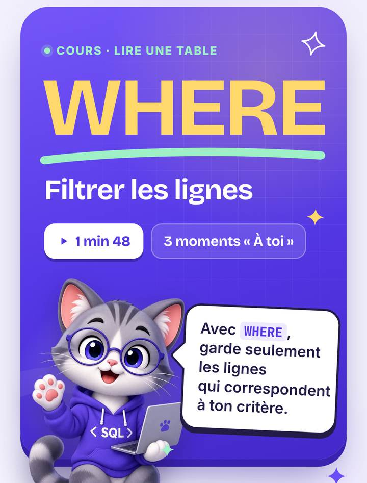
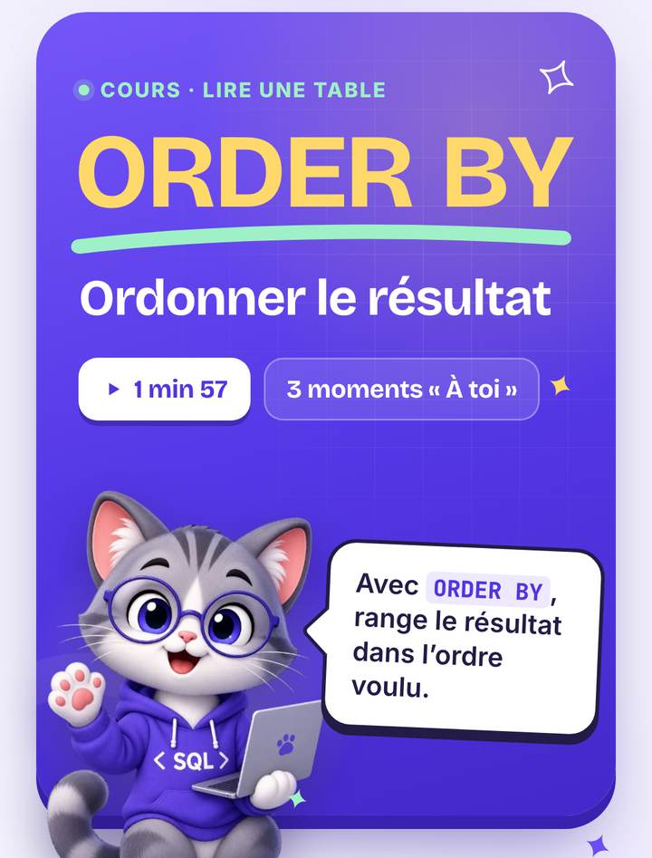
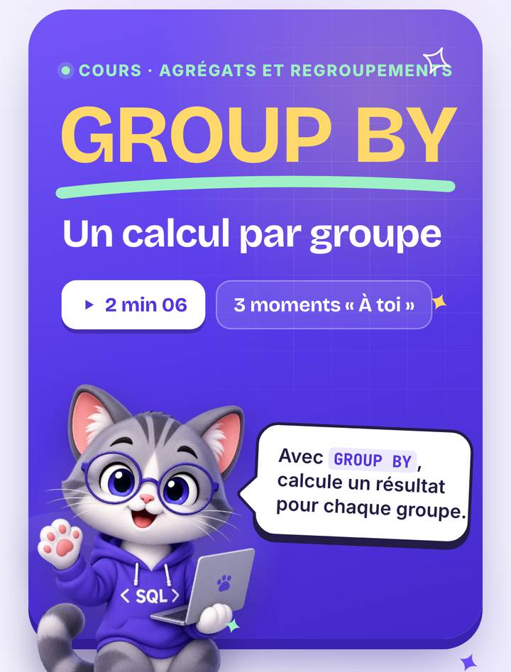
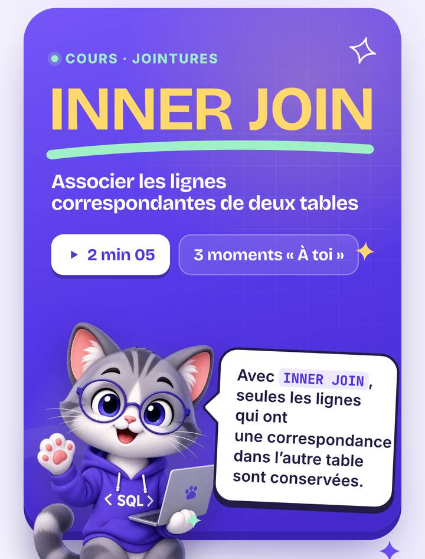
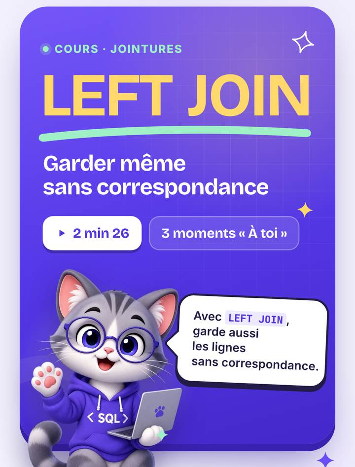
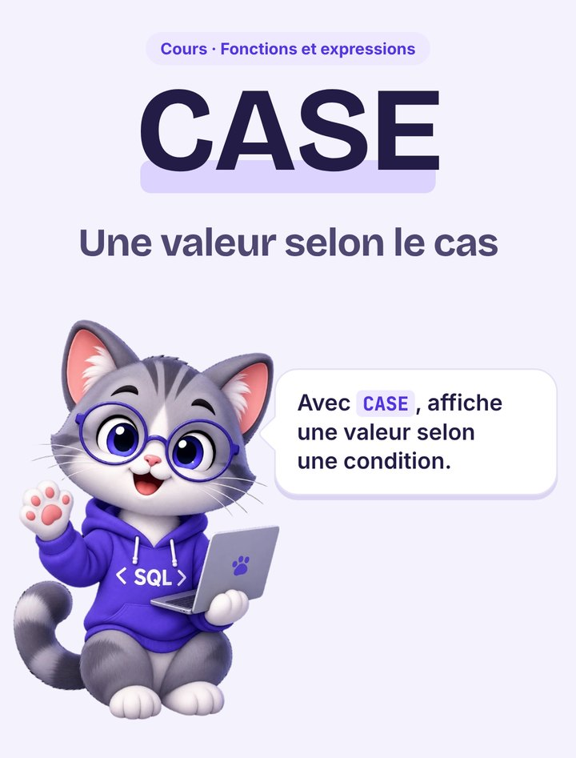
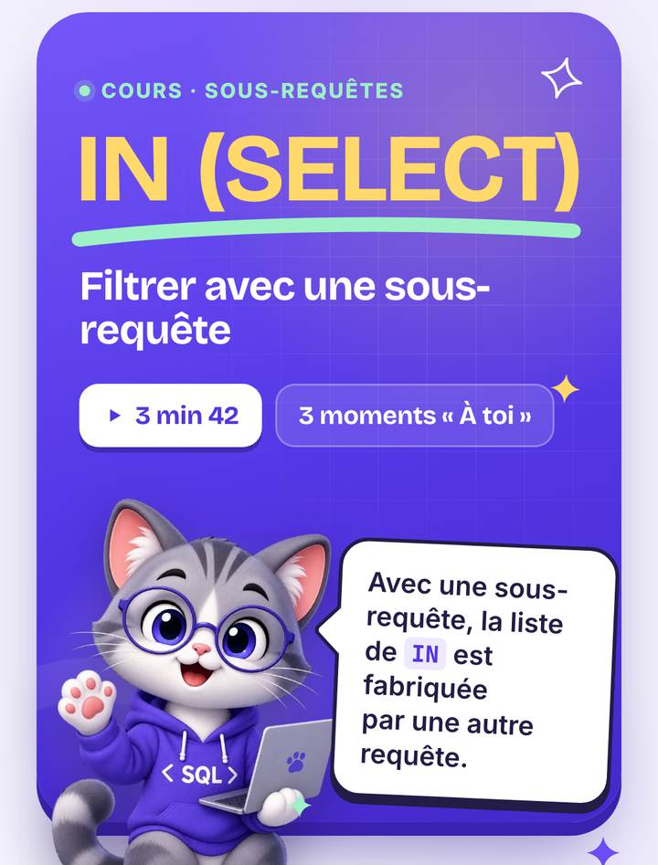
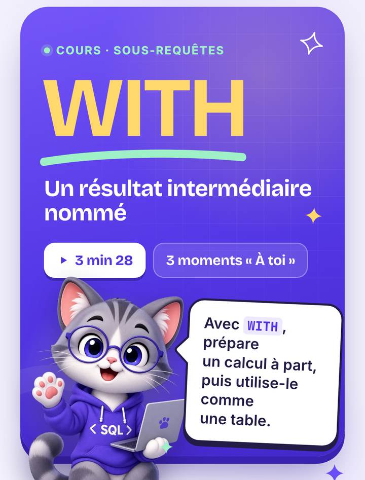
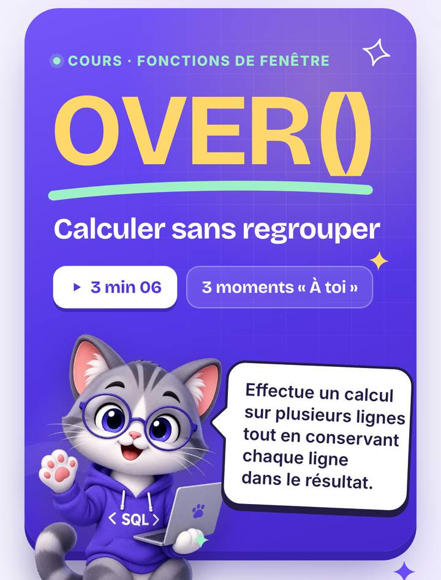
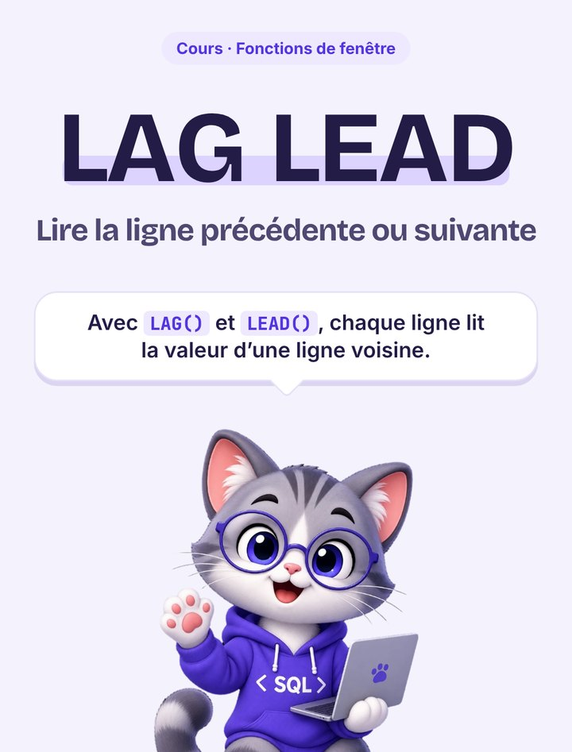

Apprends le SQL, la compétence n°1 des data analysts.
65 cours courts, un labo interactif et tes propres données. Même sans avoir jamais codé, tu progresses à ton rythme, quelques minutes par jour.
1 000+ personnes apprennent déjà le SQL avec Requête
- Sans compte
- Rien à installer
- Même hors ligne
Importe tes propres données
Un parcours pour chaque objectif.
Chaque module est un parcours complet, du premier pas au niveau avancé, avec ses cours, ses défis et ses révisions.
La compétence que les recruteurs citent en premier.
Les données d’une entreprise vivent dans des bases, et le SQL est la langue pour les interroger.
Combien gagne un data analyst ?
Salaire de base moyen, brut annuel, pour l’intitulé « Data Analyst », par ville et selon l’expérience.
Une notion à la fois, en vidéo interactive.
Chaque cours s’arrête sur des moments « À toi » : tu écris la requête, la base te répond.










Du premier SELECT aux fonctions de fenêtre, dans l’ordre où on en a besoin.
Tout pour apprendre vraiment.
Pas de vidéos de deux heures : de vrais outils pour pratiquer et réviser.
Un labo SQL dans ton navigateur
Une vraie base SQLite tourne sur ton appareil : tu écris, tu exécutes, tu vois le résultat.
Des cartes à collectionner
Chaque leçon terminée débloque sa carte mémo, à relire en un coup d’œil.
Tes propres données
Un classeur Excel devient un projet, chaque feuille une table.
Défis et révisions
25 défis métier sans filet, et des révisions qui reviennent au bon moment.
Sans réseau
Ta progression reste sur ton appareil : dans le train ou le métro, tu continues ta séance.
Garde la flamme allumée.
Chaque jour où tu fais ta séance, une flamme s’allume, et tes progrès se voient jour après jour.
- Ta série de joursTon record à battre, séance après séance.
- Tes leçons validéesLes cours du module se cochent un à un.
- Ton temps d’étudeMesuré pour chaque cours, défi et exercice.
Trois minutes pour démarrer.
- 1
Choisis ton rythme
Ton objectif, ton niveau et 10, 20 ou 30 minutes par séance : le planning s’adapte.
- 2
Suis ta séance du jour
Chaque jour, l’appli te propose ta séance, dans l’ordre du parcours.
- 3
Passe aux vrais cas
Défis métier et projets, comme en entreprise.
Requête, bientôt dans ta poche.
Tes cours, tes défis et tes cartes mémo dans une appli à part entière, toujours sur toi.
En attendant, Requête marche déjà dans le navigateur de ton téléphone : ouvre l’appli et ajoute-la à ton écran d’accueil.
Questions et réponses
Tout ce qu’on nous demande avant de commencer.
Je n’ai jamais écrit une ligne de code. C’est pour moi ?
Oui. Le parcours commence au tout premier SELECT, et l’accueil règle ton objectif, ton niveau et ton rythme en une trentaine de secondes.
Combien de temps faut-il y passer ?
C’est toi qui choisis : des séances de 10, 20 ou 30 minutes, tous les jours ou seulement en semaine. Le planning s’adapte et te propose chaque jour ta séance.
Faut-il installer quelque chose ?
Non. Une vraie base SQLite tourne directement dans ton navigateur, sur ordinateur comme sur téléphone. Il faut une connexion au premier chargement ; ensuite, l’appli fonctionne même hors ligne.
Qu’est-ce que je vais apprendre ?
65 cours : SELECT, filtres et tris, agrégats et GROUP BY, toutes les jointures, sous-requêtes et WITH, CASE et COALESCE, fonctions de texte et de dates, fonctions de fenêtre, puis la création de tables, les contraintes, les index, les transactions et les triggers.
Puis-je travailler sur mes propres données ?
Oui. Importe un fichier Excel, CSV, TSV ou SQLite : chaque feuille devient une table que tu interroges en SQL.
Où est enregistrée ma progression ?
Sur ton appareil. Depuis ton compte dans l’appli, tu peux l’exporter puis la réimporter ailleurs.
Y a-t-il une application mobile ?
Elle arrive bientôt sur l’App Store et Google Play. En attendant, Requête fonctionne déjà dans le navigateur de ton téléphone, même hors ligne, et tu peux l’ajouter à ton écran d’accueil.
Et une fois les cours terminés ?
25 défis métier sans filet sur une base e-commerce réaliste, des révisions qui reviennent au bon moment, une console SQL libre avec un visualiseur pas à pas, et des défis SQL à lancer entre amis.
Ta première requête t’attend.
Commence par la vidéo de 2 minutes, puis lance-toi.
Une question ? Écris‑nous.
Une idée pour un cours, un souci dans l’appli, un partenariat : on lit tous les messages.
- Une vraie personne te répond
- Tes idées font évoluer Requête